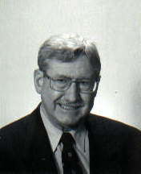

|
 On Tuesday, May 15, 2001, Professor William G. Godfrey, author of the definitive biography of the man who oversaw the building of Schuyler Mansion, will present a public program entitled "John Bradstreet's Albany Years: A 'Loyalist' View of American Expansion, 1760-1774." His appearance in Albany comes as the featured address at the annual meeting of the Friends of Schuyler Mansion State Historic Site. The lecture will be held in the great hall of the Mansion at 7:30 pm. Interested parties are welcome! Refreshments will be served! A native of Ontario, Professor Godfrey has taught history at Mount Allison University in Sackville, New Brunswick since 1970. He is the author of numerous articles on Canadian history and has been a frequent participant in historical programs across Canada. He is best known in the United States for his book Pursuit of Profit and Preferment in Colonial North America: John Bradstreet's Quest, which was published by Wilfrid Laurier University Press in 1982. The only comprehsive biography of Bradstreet, it stands as an important work in the history of the British Empire in North America as well. His appearance in Albany is sponsored by the Friends of Schuyler Mansion - a chartered educational organization that furthers the restoration, interpretion, and public awareness of the eighteenth-century home of General Philip Schuyler in Albany. The Friends hold an annual meeting each Spring for the benefit of current and prospective members. Having read his book almost two decades ago, we became re-acquainted with Professor Godfrey last year when he attended the auction in Clifton Park where he also was an unsuccessful bidder for the portrait of Bradstreet that was purchased by a dealer from Connecticut. We are pleased to bring William Godfrey to Albany to share his unique perspectives on the man who Philip Schuyler looked to for guidance. While in Albany, Professor Godfrey also will hold an informal seminar for staff and friends of the Colonial Albany Social History Project. For more information on the May 15 program, call Schuyler Mansion State Historic Site at (518) 434-0834.
|